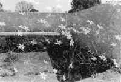

<!DOCTYPE HTML PUBLIC "-//W3C//DTD HTML 4.01 Transitional//EN"        "http://www.w3.org/TR/html4/loose.dtd">
<html lang="en">

<head>
<title>Michael Gills: Oratory - Henderson State University</title>
<meta http-equiv="Content-Language" content="en-us">
<meta http-equiv="Content-Type" content="text/html; charset=windows-1252">
<meta name="GENERATOR" content="Microsoft FrontPage 5.0">
<meta name="ProgId" content="FrontPage.Editor.Document">
<meta name="copyright" content="Copyright © 2002 Henderson State University">
<meta name="rating" content="General">
</head>

<body background="ARlogoborder.jpg" link="#006600" vlink="#006600" alink="#006600" bgcolor="#FFFFFF"><div style="background:#241b2e;color:#fff;font-family:Arial,sans-serif;font-size:13px;padding:7px 14px;text-align:center;position:relative;z-index:9999;"><a href="/books/arkansas-literary-forum" style="color:#fff;text-decoration:underline;">‚Üê Back to MarckBeggs.com</a> &nbsp;|&nbsp; <span style="opacity:.75;">Arkansas Literary Forum archive, preserved as originally published</span></div>

<div align="right">
  <table border="0" width="85%">
    <tr>
      <td width="100%" align="left">
        <blockquote>
          <p class="MsoNormal"><b><span style="font-size:18.0pt;mso-bidi-font-size:11.0pt"><font color="#006600"><font face="Arial">Michael
          Gills</font><o:p>
          </o:p>
          </font>
          </span></b></p>
        </blockquote>
        <p class="MsoNormal"><b><span style="font-size:14.0pt;mso-bidi-font-size:11.0pt">Oratory<o:p>
        </o:p>
        </span></b></p>
        <p class="MsoNormal" align="left"><b><span style="mso-bidi-font-size: 11.0pt"><font size="7"><a href="images/fisherG.jpg">
        </a></font><font color="#006600" size="5">C</font></span></b><span style="font-size:12.0pt;mso-bidi-font-size:11.0pt">ooper Smith worries a sore inside his mouth, watching Yvonne
        flip into a turn at the deep end where the boards are.<span style="mso-spacerun: yes">
        </span>Into her mile, she sprawls under the pale for six, seven meters,
        then ruptures it, a fierce butterfly.<span style="mso-spacerun: yes">
        </span><i>God</i>, she can swim.<span style="mso-spacerun: yes"> </span>This,
        Easter weekend.<span style="mso-spacerun: yes"> </span>They are
        alone inside the natatorium of the college where Cooper lectures.<span style="mso-spacerun: yes">
        </span>Outside, the deserted campus is delirious.<span style="mso-spacerun: yes">
        </span>Dogwood ignites the blue<span style="mso-spacerun: yes"> </span>sky.<span style="mso-spacerun: yes">
        </span>But this building was built before the war; it is dim, and the
        air smells like onions seized up from root dirt.<o:p>
        </o:p>
        </span></p>
        <p class="MsoNormal"><span style="font-size:12.0pt;mso-bidi-font-size:11.0pt">Cooper has hidden himself behind the aluminum bleachers that are
        piled against a long, windowless wall.<span style="mso-spacerun: yes">
        </span>From where he crouches, he can hear the squelched slaps of his
        wife's rhythm on the water.<span style="mso-spacerun:
yes"> </span>She whales into another flip, stretches against the pool
        floor with amazing grace.<span style="mso-spacerun: yes"> </span>Yvonne's
        hands, far in front of the glint cast from her green goggles, are laced
        together as if in prayer.<o:p>
        &nbsp; </o:p>
        </span></p>
        <o:p>
        <p class="MsoNormal"><span style="font-size: 12.0pt; mso-bidi-font-size: 11.0pt">***</span></o:p><span style="font-size:12.0pt;mso-bidi-font-size:11.0pt">
        </span></p>
        <p class="MsoNormal"><span style="font-size:12.0pt;mso-bidi-font-size:11.0pt">He was writing a death notice when they met.<o:p>
        </o:p>
        </span></p>
        <p class="MsoNormal"><span style="font-size:12.0pt;mso-bidi-font-size:11.0pt">1981.<span style="mso-spacerun:
yes"> </span>The year Cooper dropped out, got his nose broken, and took a
        job writing obituaries at the <i>Democrat</i> in Little Rock.<span style="mso-spacerun: yes">
        </span></span><span style="font-size:12.0pt">He made five dollars an
        hour typing formal obits, phoned in from homes around the </span><span style="font-size:12.0pt;mso-bidi-font-size:11.0pt">state.<span style="mso-spacerun: yes">
        </span>People died everywhere.<span style="mso-spacerun: yes"> </span>He
        fielded calls from Texas, Louisiana, Idaho, Tanzania announcing the
        departed who had roots in Arkansas but had passed on strange soil.<o:p>
        </o:p>
        </span></p>
        <p class="MsoNormal"><span style="font-size:12.0pt;mso-bidi-font-size:11.0pt">Late in the afternoon, when people had manners enough to quit
        dying, Cooper handled Washington press releases.<span style="mso-spacerun: yes">
        </span>Yvonne was a congressional aide for an Arkansas man named
        Mayfield that year.<span style="mso-spacerun:
yes"> </span>She called the <i>Democrat</i> that day to dictate a press
        release from the Capitol Hill office.<span style="mso-spacerun: yes">
        </span>The switchboard operator put the call through to Cooper's desk.<o:p>
        </o:p>
        </span></p>
        <p class="MsoNormal"><span style="font-size:12.0pt;mso-bidi-font-size:11.0pt">&quot;Name?&quot;<o:p>
        </o:p>
        </span></p>
        <p class="MsoNormal"><span style="font-size:12.0pt;mso-bidi-font-size:11.0pt">&quot;Yvonne for Mayfield.&quot;<o:p>
        </o:p>
        </span></p>
        <p class="MsoNormal"><span style="font-size:12.0pt;mso-bidi-font-size:11.0pt">People lived their whole lives, died all day, got killed in car
        wrecks, were Rotary members, Masons, Lutherans, carpenter's wives, truck
        drivers, preceded in death, sisters, brothers, husbands.<span style="mso-spacerun: yes">
        </span>&quot;Yvonne Mayfield?<span style="mso-spacerun: yes"> </span>Who?&quot;<o:p>
        </o:p>
        </span></p>
        <p class="MsoNormal"><span style="font-size:12.0pt;mso-bidi-font-size:11.0pt">&quot;Yvonne.&quot;<span style="mso-spacerun: yes"> </span>The
        woman's voice.<span style="mso-spacerun:
yes"> </span><o:p>
        </o:p>
        </span></p>
        <p class="MsoNormal"><span style="font-size:12.0pt;mso-bidi-font-size:11.0pt">&quot;Go ahead.&quot;<o:p>
        </o:p>
        </span></p>
        <p class="MsoNormal"><span style="font-size:12.0pt;mso-bidi-font-size:11.0pt">&quot;To whom am I speaking?&quot;<o:p>
        </o:p>
        </span></p>
        <p class="MsoNormal"><span style="font-size:12.0pt;mso-bidi-font-size:11.0pt">&quot;Cooper,&quot; Cooper said.<span style="mso-spacerun: yes">
        </span>&quot;I'm in obits.&quot;<span style="mso-spacerun: yes"> </span>He
        could hear background office noises: a phone ringing off the wall,
        Xerox, voices.<o:p>
        </o:p>
        </span></p>
        <p class="MsoNormal"><span style="font-size:12.0pt;mso-bidi-font-size:11.0pt">&quot;I don't know you.î<o:p>
        </o:p></span></p>
        <p class="MsoNormal"><span style="font-size:12.0pt;
mso-bidi-font-size:11.0pt">ì</span><span style="font-size:12.0pt">Prove
        it.&quot;<o:p>
        </o:p>
        </span></p>
        <p class="MsoNormal"><span style="font-size:12.0pt">Cooper
        read from the top of the pile.<span style="mso-spacerun: yes"> </span>&quot;James
        Daniel Turner died Sunday.<span style="mso-spacerun: yes"> </span>He
        was a Baptist.&quot;<span style="mso-spacerun: yes"> </span>His
        shift was from two in the afternoon until ten at night.<span style="mso-spacerun: yes">
        </span>Holidays were hell.<span style="mso-spacerun: yes"> </span>Suicidal.<span style="mso-spacerun: yes">
        </span>&quot;Turner, 24, of Lonoke, was a graduate of Ouachita Baptist
        University in Arkadelphia.<span style="mso-spacerun: yes"> </span>You
        want some more?<span style="mso-spacerun: yes"> </span>I do press
        too.&quot;<o:p>
        </o:p>
        </span></p>
        <p class="MsoNormal"><span style="font-size:12.0pt">She
        said, &quot;Hold.&quot;<span style="mso-spacerun:
yes"> </span>And then he heard her, dictating a story about how Mayfield's
        constituency in Hope, Arkansas had loaded two Volkswagen-sized
        watermelons onto a flatbed truck and had them hauled up to the front
        steps of the Capitol.<span style="mso-spacerun: yes"> </span>Congress
        was issued knives, carved them up right there and ate every bite down to
        the rinds.<o:p>
        </o:p>
        </span></p>
        <p class="MsoNormal"><span style="font-size:12.0pt">T-shirts
        with HOPE MELONS printed in big pink letters across the chest were
        issued.<span style="mso-spacerun: yes"> </span>Everyone wore them,
        chomping seed, chewing.<span style="mso-spacerun: yes"> </span>Cooper
        pictured it, sweet juice going sticky in the afternoon sun, hot August,
        fragrant sun on summered legs, skin, light.<span style="mso-spacerun:
yes"> </span>He was lonely, terribly so.<o:p>
        </o:p>
        </span></p>
        <p class="MsoNormal"><span style="font-size:12.0pt">&quot;Guess
        what Congressman Mayfield said.<span style="mso-spacerun: yes"> </span>My
        boss.<span style="mso-spacerun: yes"> </span>Your elected rep.<span style="mso-spacerun: yes">
        </span>Are you listening?<span style="mso-spacerun: yes"> </span>Guess?&quot;<o:p>
        </o:p>
        </span></p>
        <p class="MsoNormal"><span style="font-size:12.0pt">Out
        of habit, Cooper had typed everything Yvonne had told him into the form
        of an obituaryóhere was a structure, order-logic,<span style="mso-spacerun: yes">
        </span>hierarchy.<span style="mso-spacerun: yes"> </span>He looked
        at what he'd written.<o:p>
        </o:p>
        </span></p>
        <p class="MsoNormal"><span style="font-size:12.0pt">&quot;What'd
        he say?&quot;<o:p>
        </o:p>
        </span></p>
        <p class="MsoNormal"><span style="font-size:12.0pt">&quot;Nice
        melons.<span style="mso-spacerun: yes"> </span>He pointed at my
        tits.<span style="mso-spacerun: yes"> </span>He referred to my
        breasts as melons.<span style="mso-spacerun: yes"> </span>What's
        with you people down there?&quot;<o:p>
        </o:p>
        </span></p>
        <p class="MsoNormal"><span style="font-size:12.0pt">&quot;I'll
        kill him.&quot;<o:p>
        </o:p>
        </span></p>
        <p class="MsoNormal"><span style="font-size:12.0pt">Yvonne
        said, &quot;I already did.<span style="mso-spacerun: yes"> </span>Write
        me a letter, Smith.<span style="mso-spacerun: yes"> </span>We'll
        correspond.<span style="mso-spacerun:
yes"> </span>I know you're a maniac.<span style="mso-spacerun: yes">
        </span>Are you a maniac?&quot;<o:p>
        </o:p>
        </span></p>
        <p class="MsoNormal"><span style="font-size:12.0pt">Cooper
        said, &quot;I'd like that.&quot;<o:p>
        </o:p>
        </span></p>
        <p class="MsoNormal"><span style="font-size:12.0pt">Just
        like that.<span style="mso-spacerun: yes"> </span>Out of a zillion
        days, one moment always rockets toward you when fire flies.<o:p>
        </o:p>
        </span></p>
        <p class="MsoNormal"><span style="font-size:12.0pt">Five
        years; they wrote each other letters for five years.<o:p>
        &nbsp;</o:p></span></p>
        <o:p>
        <p class="MsoNormal"><span style="font-size: 12.0pt">***</span></o:p></p>
        <p class="MsoNormal"><span style="font-size:12.0pt">Cooper
        holds a finger to his throat, times his wife by heartbeat; she is forty
        from one end to the other.<span style="mso-spacerun: yes"> </span>He's
        no match for her in the water.<span style="mso-spacerun: yes"> </span>Yvonne
        swam for the University of Maryland and just missed the Olympics in '80.<span style="mso-spacerun: yes">
        </span>She holds state records in South Carolina, has had her name in </span><i><span style="font-size:12.0pt;mso-bidi-font-size:
11.0pt">Sports Illustrated</span></i><span style="font-size:12.0pt;mso-bidi-font-size:
11.0pt">.<span style="mso-spacerun: yes"> </span>Inside the locked baby
        room at homeóshe has made it into a shrine for lost thingsóthree
        scrapbooks are filled with medals, ribbons, certificates of honor.<span style="mso-spacerun:
yes"> </span>One, dedicated to the trials, has a flattened paper bag taped
        to a page; inside, fine blonde hairs curl.<span style="mso-spacerun: yes">
        </span>&quot;Guess where <i>this</i> came from?&quot; is magic markered
        on the page margin where the deep blue letters have slightly smeared.<span style="mso-spacerun: yes">
        </span>Cooper put a pinch of his wife's pubic hairódelicate as
        newborn'sóinto the family Bible for good luck.<o:p>
        &nbsp; </o:p>
        </span></p>
        <o:p>
        <p class="MsoNormal"><span style="font-size: 12.0pt; mso-bidi-font-size: 11.0pt">***</span></o:p><span style="font-size:12.0pt;mso-bidi-font-size:
11.0pt">
        </span></p>
        <p class="MsoNormal"><span style="font-size:12.0pt;mso-bidi-font-size:11.0pt">Yvonne is nearly six-feet tall, and it's hard to tell her sex
        from here.<span style="mso-spacerun: yes"> </span>She could be
        anyone.<span style="mso-spacerun: yes"> </span>Her weight buoys
        her, allows her speed.<span style="mso-spacerun: yes"> </span>In
        his head, Cooper practices what he has come to do and is bewildered by
        this ritual that he is not part of.<span style="mso-spacerun: yes">
        </span>He sees her as pure passion, imaginative grief in the black
        one-piece, goggle-eyed, as he crouches, stripped to his underwear,
        behind the aluminum bleachers.<span style="mso-spacerun: yes"> </span>He
        takes one last bolt of the damp air as Yvonne breaks into a hard
        freestyle, swimming straight in the middle lane.<span style="mso-spacerun: yes">
        </span>Cooper crawls out on his hands and kneesólike an animal, he
        thinksóto the ledge where five-fe</span><span style="font-size:12.0pt">et
        is chiseled into cement.<span style="mso-spacerun:
yes"> </span>Without sound, he lowers himself into the lukewarm water and
        sinks down so that his nose is just above the surface.<span style="mso-spacerun: yes">
        </span>His urine is warm.<span style="mso-spacerun:
yes"> </span>It rises in fingers against his chest as he waits for the one
        he has loved to swim back through the shallows.<o:p>
        &nbsp;</o:p></span></p>
        <o:p>
        <p class="MsoNormal"><span style="font-size: 12.0pt">***</span></o:p></p>
        <p class="MsoNormal"><i><span style="font-size:12.0pt;
mso-bidi-font-size:11.0pt">In how many mirrors have you taken that picture, my
        angel disguised as your accomplice?<span style="mso-spacerun: yes">
        </span>Who has given you the explanation of my failings?<span style="mso-spacerun: yes">
        </span>Are you borrowing my blood for a lie or a prayer?<o:p>
        </o:p>
        </span></i></p>
        <p class="MsoNormal"><span style="font-size:12.0pt;mso-bidi-font-size:11.0pt">This, what Yvonne had written after the jobless year, her
        panhandling spring, her <i>downtime</i>, the year when things fell down
        and each letter held some reference to the holes in her life.<span style="mso-spacerun: yes">
        </span>By 1983, Cooper had quit his newspaper job and moved to
        Fayetteville, where he tried to finish the degree he'd lied about having
        in a rÈsumÈ.<span style="mso-spacerun: yes"> </span>He was
        living with a forty-year-old woman who'd advertised room and board in
        exchange for work, but what he mostly did was drink whiskey with her and
        hear the endless story of how she'd had oral sex with the Episcopal
        priest before holy communion, how her husband had gotten himself killed
        on the road, how sleeping with her sixteen-year-old son was no longer
        possible because he'd started getting erections.<span style="mso-spacerun: yes">
        </span>She watched him rake out her gravel drive, stack hay head high in
        the loft, polish the panel walls, the banister on the stairs all the way
        to her bedroom.<span style="mso-spacerun: yes"> </span>Vague
        references brought immediate responses from Yvonne.<o:p>
        </o:p>
        </span></p>
        <p class="MsoNormal"><span style="font-size:12.0pt;mso-bidi-font-size:11.0pt">People from Arkansas lived in places named Smackover, for God's
        sake.<span style="mso-spacerun: yes"> </span>Yvonne prodded,
        sometimes writing whole passages in the bumpkin dialect she'd picked up
        from Mayfield's home people on the Hill.<span style="mso-spacerun: yes">
        </span>For his part, Cooper drafted and redrafted each letter, longhand
        cursive on rag paper.<span style="mso-spacerun: yes"> </span>He
        sent Yvonne lyric poems, and even wrote a story about what would happen
        when they met.<span style="mso-spacerun: yes"> </span>The
        narrative prophesied a wedding in a temple, how the small beads on
        Yvonne's white dress would look as light filtered through stained glass,
        how she would laugh at the instant when he said &quot;I do.&quot;<o:p>
        </o:p>
        </span></p>
        <p class="MsoNormal"><span style="font-size:12.0pt;mso-bidi-font-size:11.0pt"><i>Here is what I want you to do tonight instead of screwing your
        keeper</i>, Yvonne wrote on the onion-skin page of a letter she claimed
        to have panhandled stamps for.<span style="mso-spacerun: yes"> </span>She
        had enclosed a charcoal nude of herselfóthe only likeness he ever knew
        of her until the day they metóalong with a marijuana cigarette.<span style="mso-spacerun: yes">
        </span><i>I want you to put on your best suit of clothes, comb your hair
        straight down and perfume yourself with your best cologne.<span style="mso-spacerun: yes">
        </span>Turn the lights out and pull down the stained shades.<span style="mso-spacerun:
yes"> </span>Shut the doors.<span style="mso-spacerun: yes"> </span>Lock
        them inside out.<span style="mso-spacerun: yes"> </span>Tape me to
        your headboard and burn a candle close enough for the light to flicker,
        to jump across my contours, my roughness.<span style="mso-spacerun: yes">
        </span>Light the joint, smoke until your head swims.<span style="mso-spacerun: yes">
        </span>Let me come alive for you.<span style="mso-spacerun: yes"> </span>Touch
        my paper heart, harder, smear me with two fingers down to there, see how
        I take you, how your fingers print me.<span style="mso-spacerun: yes">
        </span>Strip, slowly, one garment at a time as you must for a lover.<span style="mso-spacerun: yes">
        </span>See how I look you in the eye and shiver.<span style="mso-spacerun:
yes"> </span>Shut your eyes and feel my kiss on your lips, my tongue in
        your mouth, in the hole where you miss a tooth.<span style="mso-spacerun: yes">
        </span>Feel me cup the small of your back and listen to how my breath
        quickens, then stops.<span style="mso-spacerun: yes"> </span>Blow
        the candle out, cover yourself with the thin sheet, see us love.<span style="mso-spacerun: yes">
        </span>Rock with me.<span style="mso-spacerun: yes"> </span>Remember.<span style="mso-spacerun: yes">
        </span>Who to say no?<o:p>
        </o:p>
        </i></span></p>
        <p class="MsoNormal" align="left"><span style="font-size: 12.0pt; mso-bidi-font-size: 11.0pt">***</span></p>
        <p class="MsoNormal" align="left"><span style="font-size:12.0pt;
mso-bidi-font-size:11.0pt">From this level, Cooper can hear the sharp exhale and
        inhale she makes on every third stroke, see that his great-grandmother's
        wedding band is missing from her left hand.<span style="mso-spacerun: yes">
        </span>Yvonne wears no bathing cap.<span style="mso-spacerun: yes">
        </span>Her blonde hair is darkened by water and slicked back over the
        crown of her head, so that it looks even shorter.<span style="mso-spacerun: yes">
        </span>Cooper holds a breath.<span style="mso-spacerun: yes"> </span>He
        has the sensation of being half-in and half-out of himself.<span style="mso-spacerun: yes">
        </span>Yvonne is swimming in his direction now, lurching in the
        backstroke that makes her vulnerable, blind to the distance between her
        and the wall she must use to flip.<span style="mso-spacerun: yes">
        </span>A bubbly wake skeins out behind her, fine as the lace wedding
        train </span><span style="font-size:12.0pt">that caught and ripped as
        they guided each other away from the pulpit.<span style="mso-spacerun: yes">
        </span>Cooper wants to warn her of her progress, to caution against the
        concrete that could break a finger, arm, split the skull.<span style="mso-spacerun: yes">
        </span>He restrains himself and, at the last possible second, as if she
        has some inborn knowledge of the invisible thing that she's up against,
        Yvonne spins into a perfect flip, blooms under the onion- scented water.<o:p>
        &nbsp;</o:p></span></p>
        <o:p>
        <p class="MsoNormal" align="left"><span style="font-size: 12.0pt">***</span></o:p></p>
        <p class="MsoNormal" align="left"><span style="font-size:12.0pt">They
        met at the foot of a neon cross, one breathtaking Easter Sunday morning
        on the last day of March, 1986, just as a small group of worshipers
        kneeled to pray for the souls of the astronauts who'd exploded in the
        Challenger takeoff.<span style="mso-spacerun: yes"> </span>Yvonne
        had flown from D.C. to Tulsa International, rented a car and driven to
        Fayetteville where she intended to hand deliver their fiftieth letter.<span style="mso-spacerun: yes">
        </span>Mount Sequoyah, which overlooked Fayetteville, Arkansas, the town
        Yvonne referred to as </span><i><span style="font-size:12.0pt;mso-bidi-font-size:11.0pt">Fateville</span></i><span style="font-size:12.0pt;mso-bidi-font-size:11.0pt">,
        was the site of a Pentecostal church camp.<span style="mso-spacerun: yes">
        </span>Loud icons were situated in the blind spots of every sharp curve
        to surprise sightseers on the scenic route.<span style="mso-spacerun: yes">
        </span></span><span style="font-size:12.0pt">White-faced Mary wore red
        lipstick; Jesus was rigged with a tape that repeated &quot;I am risen.<span style="mso-spacerun: yes">
        </span>I am risen,&quot; as if surprised by this stroke of good fortune.<span style="mso-spacerun: yes">
        </span>A slight wind stirred his purple robe, stained with chicken
        blood.<span style="mso-spacerun: yes"> </span>Cooper chose this
        place because one could make out church steeples dazzling the valley
        below, how the glass covering the sword-like hands of the courthouse
        clock blazed; Yvonne would be able to see Cooper's own tin roof, how the
        foothills knuckled into the Ozarks toward Missouri.<o:p>
        </o:p>
        </span></p>
        <p class="MsoNormal"><span style="font-size:12.0pt">As
        a tall, black-headed man offered up the words to the Lord's Prayer, a
        silver car rolled to a standstill on the road above.<span style="mso-spacerun: yes">
        </span>Cooper's heart accelerated as the engine got killed and the woman
        he'd revealed his most private secrets to stepped out into the strong
        sunlight.<span style="mso-spacerun: yes"> </span>She threaded her
        way through the kneeling Pentecostals, come to the neon cross for the
        prayer of resurrection, touching the shoulders of three younger men so
        that their eyes flung open as if shaken from dream.<span style="mso-spacerun: yes">
        </span>The flesh and blood Yvonne ran circles around any charcoal nudie.<span style="mso-spacerun: yes">
        </span>She was something to see.<span style="mso-spacerun: yes"> </span>Tall,
        she carried herself with the conviction of one who comes from someplace
        important, bearing integral news.<span style="mso-spacerun: yes"> </span>Her
        hands.<span style="mso-spacerun: yes"> </span>Look at them, see
        how the fingers curl, bend, flex as she writes, marks the hard C's loop
        into the flowing S, The thumb and index fingers come together, hesitate,
        before the stamp is touched to the tastebud tongue, the sweet spot and
        blown dry.<span style="mso-spacerun: yes"> </span>Jesus.<span style="mso-spacerun: yes">
        </span>The eyes he'd once smeared on coarse paper looked straight
        through him, they knew and knew and knew him, discerned him by
        elimination, were brimful of knowing.<span style="mso-spacerun: yes">
        </span>How can you say it?<span style="mso-spacerun: yes"> </span>Where
        do words go?<span style="mso-spacerun:
yes"> </span>She was close enough to breathe in, to taste, to be.<o:p>
        </o:p>
        </span></p>
        <p class="MsoNormal"><span style="font-size:12.0pt">One
        at a time, she'd brought their eyes open, nodding when they shook their
        heads no.<span style="mso-spacerun: yes"> </span>Cooper sat
        cross-legged on green grass, just beyond the stone benches that formed a
        crude perimeter around the blinking cross.<span style="mso-spacerun: yes">
        </span>He wore cotton, razor-creases, had brought an unopened bottle of
        Wild Turkey.<span style="mso-spacerun: yes"> </span>He lit a
        cigarette, sucked teeth, fought with his coward self.<o:p>
        </o:p>
        </span></p>
        <p class="MsoNormal"><span style="font-size:12.0pt">&quot;Are
        you </span><u><span style="font-size:12.0pt;
mso-bidi-font-size:11.0pt">him</span></u><span style="font-size:12.0pt;
mso-bidi-font-size:11.0pt">?&quot;<span style="mso-spacerun: yes"> </span>She
        wore bracelets on her wrists.<o:p>
        </o:p>
        </span></p>
        <p class="MsoNormal"><span style="font-size:12.0pt;mso-bidi-font-size:11.0pt">Cooper said he was.<span style="mso-spacerun: yes"> </span>He
        stood, shook, said, &quot;Here.&quot;<o:p>
        </o:p>
        </span></p>
        <p class="MsoNormal"><span style="font-size:12.0pt;mso-bidi-font-size:11.0pt">&quot;Good,&quot; Yvonne said.<span style="mso-spacerun: yes">
        </span>She placed a liter wine bottle beside his liquor and kissed the
        side of his face.<span style="mso-spacerun: yes"> </span>She
        smelled like nothing he knew.<span style="mso-spacerun: yes"> </span>&quot;How
        long does it take not to be lost around here?&quot;<o:p>
        </o:p>
        </span></p>
        <p class="MsoNormal"><span style="font-size:12.0pt;mso-bidi-font-size:11.0pt">He'd rehearsed what seemed stupid now.<span style="mso-spacerun: yes">
        </span>&quot;You're lost?&quot;<o:p>
        </o:p>
        </span></p>
        <p class="MsoNormal"><span style="font-size:12.0pt;mso-bidi-font-size:11.0pt">The sun hit her skin when she took off the jacket.<span style="mso-spacerun: yes">
        </span>The Pentecostals were used to this sort of thing.<span style="mso-spacerun: yes">
        </span>&quot;All goddamn morning.<span style="mso-spacerun: yes"> </span>Do
        they have bathrooms here?&quot;<o:p>
        </o:p>
        </span></p>
        <p class="MsoNormal"><span style="font-size:12.0pt;mso-bidi-font-size:11.0pt">They sat together beside a bench, two people.<o:p>
        </o:p>
        </span></p>
        <p class="MsoNormal"><span style="font-size:12.0pt;mso-bidi-font-size:11.0pt">Yvonne said she could wait.<span style="mso-spacerun: yes">
        </span>&quot;They screwed my directions from Tulsa.<span style="mso-spacerun: yes">
        </span>I had breakfast with a trucker who knew and knew and knew how to
        get me here.<span style="mso-spacerun: yes"> </span>What is it
        with truckers?&quot;<span style="mso-spacerun: yes"> </span>She
        lifted arms, palms up.<span style="mso-spacerun: yes"> </span>&quot;I'm
        here.<span style="mso-spacerun: yes"> </span>Tell me why?&quot;<o:p>
        </o:p>
        </span></p>
        <p class="MsoNormal"><span style="font-size:12.0pt;mso-bidi-font-size:11.0pt">&quot;Happy Easter,&quot; Cooper said.<span style="mso-spacerun: yes">
        </span>&quot;Any other trouble?<span style="mso-spacerun: yes"> </span>How
        was your trip?<span style="mso-spacerun:
yes"> </span>My father's a truck driver.&quot;<o:p>
        </o:p>
        </span></p>
        <p class="MsoNormal"><span style="font-size:12.0pt;mso-bidi-font-size:11.0pt">&quot;You never said that.<span style="mso-spacerun: yes"> </span>You
        told me he owned land.&quot;<o:p>
        </o:p>
        </span></p>
        <p class="MsoNormal"><span style="font-size:12.0pt;mso-bidi-font-size:11.0pt">&quot;Want a drink?&quot;<o:p>
        </o:p>
        </span></p>
        <p class="MsoNormal"><span style="font-size:12.0pt;mso-bidi-font-size:11.0pt">She said, &quot;Yes I would, Smith.<span style="mso-spacerun: yes">
        </span>Please.<span style="mso-spacerun: yes"> </span>A
        little.&quot;<o:p>
        </o:p>
        </span></p>
        <p class="MsoNormal"><span style="font-size:12.0pt;mso-bidi-font-size:11.0pt">Yvonne unslung a camera that had been invisible and started
        clicking off pictures while Cooper poured and drank his.<span style="mso-spacerun: yes">
        </span>The dark-headed preacher's voice rose and fell, a cadence which
        held within its pitch the whole barbed-wired world, the rain-on-tin
        sound of Cooper's people.<span style="mso-spacerun:
yes"> </span>His oratory was filled with ringing allusions to the LORD GOD
        ALMIGHTY whose heavenly mansions were cemented by the blood of the lamb.<o:p>
        </o:p>
        </span></p>
        <p class="MsoNormal"><span style="font-size:12.0pt;mso-bidi-font-size:11.0pt">&quot;Cheers,&quot; Yvonne said.<span style="mso-spacerun: yes">
        </span>She knocked hers back, handed the glass to Cooper, then snapped a
        few shots of the preacher who was leading a spirit-filled rendition of
        &quot;I'll Fly Away.&quot;<span style="mso-spacerun:
yes"> </span>Yvonne let the camera fall, and clapped along.<span style="mso-spacerun: yes">
        </span>&quot;T</span><span style="font-size:12.0pt">hese people are out
        of this world, Smith.<span style="mso-spacerun: yes"> </span>Who
        are they?&quot;<span style="mso-spacerun: yes"> </span>She took
        off her sandals.<span style="mso-spacerun: yes"> </span>Her feet
        looked like a dancer's.<o:p>
        </o:p>
        </span></p>
        <p class="MsoNormal"><span style="font-size:12.0pt">&quot;Holy
        roller campers.<span style="mso-spacerun:
yes"> </span>Here's to you coming.&quot;<o:p>
        </o:p>
        </span></p>
        <p class="MsoNormal"><span style="font-size:12.0pt">Yvonne touched Cooper's boot with a blistered foot.<span style="mso-spacerun: yes">
        </span>&quot;Say something to me that matters.<span style="mso-spacerun: yes">
        </span>I want to remember.&quot;<o:p>
        </o:p>
        </span></p>
        <p class="MsoNormal"><span style="font-size:12.0pt">&quot;You
        saved my life with those letters.<span style="mso-spacerun: yes"> </span>I
        keep them.<span style="mso-spacerun:
yes"> </span>We know each other inside.<span style="mso-spacerun: yes">
        </span>You never judged.<span style="mso-spacerun: yes"> </span>I'm
        treating you like a queen this week, Yvonne.<span style="mso-spacerun: yes">
        </span>That's something to remember.&quot;<o:p>
        </o:p>
        </span></p>
        <p class="MsoNormal"><span style="font-size:12.0pt">&quot;Take
        this and remember me,&quot; Yvonne said.<span style="mso-spacerun: yes">
        </span>She told Cooper to shut his eyes and he did.<span style="mso-spacerun: yes">
        </span>Then, for a minute by the clock, she touched his face with her
        fingers.<span style="mso-spacerun: yes"> </span>She traced the
        buckle of his chin, the hawked nose that had once been broken, the
        widow's peak high on his forehead.<span style="mso-spacerun: yes">
        </span>It was like she was blind and wanted to know him; who had ever
        touched his face?<span style="mso-spacerun: yes"> </span>&quot;Hallelujah,&quot;
        she yelled, only half-mock, so that several of the Pentecostals glanced
        over, as if they were part of the wayward flock.<o:p>
        </o:p>
        </span></p>
        <p class="MsoNormal"><span style="font-size:12.0pt">Cooper
        pointed out the visible landmarks, showed her the direction to Little
        Rock, to Petit Jean Mountain, to D.C.ówhere he'd once driven toward
        only to have a hitchhiker tell him he was crazy to run off to a woman
        he'd never even seen.<span style="mso-spacerun: yes"> </span>He
        told her about Eureka Springs to the north, where a hundred feet tall
        Christ of the Ozarks drew crowds from around the world.<span style="mso-spacerun: yes">
        </span>Yvonne got Cooper to stand up straight, arms flung outward over
        the city below, and took his picture.<span style="mso-spacerun: yes">
        </span>They drank to what had been confessed in their letters, to risk,
        Wayne Coomers and the Original Sins, to the dangers of how they loved.<span style="mso-spacerun:
yes"> </span>Then, Yvonne slipped the fiftieth letter from her coat
        pocket, slit it with a fingernail.<o:p>
        </o:p>
        </span></p>
        <p class="MsoNormal"><span style="font-size:12.0pt">&quot;My
        dear Smith,&quot; she said, just as the air burst into a cacophony of
        what sounded like a thousand bells ringing up from the churches in the
        valley below, </span><u><span style="font-size:12.0pt;
mso-bidi-font-size:11.0pt">Fateville</span></u><span style="font-size:12.0pt;
mso-bidi-font-size:11.0pt">.<span style="mso-spacerun: yes"> </span>&quot;I
        have loved,&quot; Yvonne said, but her voice was lost to the
        evangelical's discord, shouts in strange tongues, the singing clamor
        knifing up from each bell, all rolled into a single harmonic vibrato
        that was offered up to the bare blue place where words go.<span style="mso-spacerun: yes">
        </span>Yvonne lipped the words of their fiftieth letter into this sea of
        sound, and Cooper could tell by her strong expressions that she was
        revealing some long-kept key to her heart.<span style="mso-spacerun: yes">
        </span>She seemed to speak of the distance love carries, how we send our
        hope out into the great unknown places.<span style="mso-spacerun: yes">
        </span>Years later, when he finally realized what she had tried to tell
        him, but doubted that such a moment had every really happened, Cooper
        would fight to reclaim the sheer kick of the instant when this woman who
        knew him to the crooked core had opened up her mouth, and out had poured
        glory.<o:p>
        &nbsp;</o:p></span></p>
        <o:p>
        <p class="MsoNormal"><span style="font-size: 12.0pt; mso-bidi-font-size: 11.0pt">***</span></o:p></p>
        <p class="MsoNormal"><span style="font-size:12.0pt;
mso-bidi-font-size:11.0pt">Cooper takes a breath of heavy air, lets his body
        slide down the slick wall to the pool floor, where he sits eyes wide to
        the chlorine burn.<span style="mso-spacerun: yes"> </span>He has
        read how the voices of whales carry three-thousand miles under the
        ocean, how they sing warnings and songs that translate into joy, or even
        love.<span style="mso-spacerun: yes"> </span>The idea of messages
        sent out across murky channels does not lose itself on Cooper, now.<span style="mso-spacerun: yes">
        </span>Through the green haze, he can see his wife butterflying,
        aflutter on the plane that separates them.<o:p>
        </o:p>
        </span></p>
        <p class="MsoNormal"><span style="font-size:12.0pt;mso-bidi-font-size:11.0pt">Cooper's heartbeat quickens; he must choose words carefully.<span style="mso-spacerun: yes">
        </span><i>Don't you dare</i>, he says into the water.<span style="mso-spacerun: yes">
        </span><i>I love . . .</i> he manages as she passes.<span style="mso-spacerun: yes">
        </span>His voice sounds nothing like the music of whales must.<span style="mso-spacerun: yes">
        </span>What Cooper hears is an eerie glut that reminds him of people
        who've lost larynxes, who speak through amplifiers held tight to vocal
        cords.<span style="mso-spacerun: yes"> </span><i>You listen to me</i>,
        Cooper says deep in his throat, breathing water.<span style="mso-spacerun: yes">
        </span>Yvonne powers away.<o:p>
        </o:p>
        </span></p>
        <p class="MsoNormal"><span style="font-size:12.0pt;mso-bidi-font-size:11.0pt">She has quit listening.<o:p>
        &nbsp;</o:p></span></p>
        <o:p>
        <p class="MsoNormal"><span style="font-size: 12.0pt; mso-bidi-font-size: 11.0pt">***</span></o:p></p>
        <p class="MsoNormal"><span style="font-size:12.0pt;
mso-bidi-font-size:11.0pt">Cooper proposed.<span style="mso-spacerun: yes">
        </span>They were still out of breath from the steep hike to a flat rock
        that overlooked a bend in the White River where nude sunbathers lay
        glistening on rocks in the stream.<o:p>
        </o:p>
        </span></p>
        <p class="MsoNormal"><span style="font-size:12.0pt;mso-bidi-font-size:11.0pt">This was Yvonne's seventh and final day in Fayetteville.<span style="mso-spacerun: yes">
        </span>She had carefully packed a picnic of Camembertóit reminded
        Cooper of baby shitóbread, balled melon and red wine for their last
        meal together before her departure that afternoon.<span style="mso-spacerun: yes">
        </span>That morning, Cooper had allowed Yvonne to photograph his ass
        while standing naked on a tree stump.<span style="mso-spacerun: yes">
        </span>&quot;Let's get married,&quot; he said.<o:p>
        </o:p>
        </span></p>
        <p class="MsoNormal"><span style="font-size:12.0pt;mso-bidi-font-size:11.0pt">Yvonne laughed out loud.<span style="mso-spacerun: yes"> </span>The
        question was ridiculous.<span style="mso-spacerun: yes"> </span>&quot;We
        haven't even lunched yet, Smith,&quot; she said.<span style="mso-spacerun: yes">
        </span>&quot;There are nude people down there.&quot;<o:p>
        </o:p>
        </span></p>
        <p class="MsoNormal"><span style="font-size:12.0pt;mso-bidi-font-size:11.0pt">&quot;Naked,&quot; Cooper said.<span style="mso-spacerun: yes">
        </span>&quot;Say yes.&quot;<o:p>
        </o:p>
        </span></p>
        <p class="MsoNormal"><span style="font-size:12.0pt;mso-bidi-font-size:11.0pt">Yvonne unzipped the day pack, set out two coffee mugs.<span style="mso-spacerun: yes">
        </span>She turned the bottle into the screw so that it squeaked.<span style="mso-spacerun: yes">
        </span>&quot;You're crazy.&quot;<span style="mso-spacerun: yes"> </span>Yvonne
        frowned.<span style="mso-spacerun: yes"> </span>She poured three
        fingers into each mug.<span style="mso-spacerun: yes"> </span>&quot;And
        I'm crazy, too.&quot;<o:p>
        </o:p>
        </span></p>
        <p class="MsoNormal"><span style="font-size:12.0pt;mso-bidi-font-size:11.0pt">Just then, a long scarlet-orange king snake winded its way across
        the rock, dragging skeins of shed transparent skin.<span style="mso-spacerun: yes">
        </span>Yvonne reached out and tore away a length of scaly skin.<o:p>
        </o:p>
        </span></p>
        <p class="MsoNormal"><span style="font-size:12.0pt;mso-bidi-font-size:11.0pt">&quot;Snake.<span style="mso-spacerun: yes"> </span>Don't
        touch that snake.&quot;<o:p>
        </o:p>
        </span></p>
        <p class="MsoNormal"><span style="font-size:12.0pt;mso-bidi-font-size:11.0pt">&quot;You think you know me.&quot;<span style="mso-spacerun: yes">
        </span>She wrapped the wispy skin around a finger, the sound like wind
        through October corn.<span style="mso-spacerun: yes"> </span>Nearby,
        a dove sounded a thin whistle.<span style="mso-spacerun: yes"> </span>Hyades
        would predict hard rain tonight.<span style="mso-spacerun: yes"> </span><o:p>
        </o:p></span></p>
        <p class="MsoNormal"><span style="font-size:12.0pt">&quot;Reptiles
        mean good luck.<span style="mso-spacerun: yes"> </span>I've
        heard.&quot;<o:p>
        </o:p>
        </span></p>
        <p class="MsoNormal"><span style="font-size:12.0pt">It
        was a spring morning in April, in north Arkansas, on a river where
        people without clothes on took the sun.<span style="mso-spacerun:
yes"> </span>That was how it seemed.<span style="mso-spacerun: yes">
        </span>Holy.<o:p>
        </o:p>
        </span></p>
        <p class="MsoNormal"><span style="font-size:12.0pt">&quot;I
        don't care.&quot;<o:p>
        </o:p>
        </span></p>
        <p class="MsoNormal"><span style="font-size:12.0pt">&quot;Fine.<span style="mso-spacerun: yes">
        </span>Sure.<span style="mso-spacerun: yes"> </span>Why not?&quot;<o:p>
        </o:p>
        </span></p>
        <p class="MsoNormal"><span style="font-size:12.0pt">So
        they drew their plans on a flat rock where a snake had crossed,
        interrupted by an occasional yelp from a bather who'd jumped into the
        current.<span style="mso-spacerun: yes"> </span>Cooper could sell
        his cherry bed, his grandmother's chifforobe, for airplane cash to D.C.,
        where Yvonne's apartment had a room with a writing desk.<span style="mso-spacerun: yes">
        </span>He'd get a job, something that would get him on her mother's good
        side.<span style="mso-spacerun: yes"> </span>He'd meet the
        Captain, her strapping father, a three time destroyer boss who'd
        schooled at Annapolis.<span style="mso-spacerun: yes"> </span>They'd
        spend a week in summer at Ocracoke Inlet, the family beach house, where
        Blackbeard once harbored and the Atlantic was money-color green.<span style="mso-spacerun: yes">
        </span>They'd visit the Netherlands where Yvonne had friends,
        connections, an old lover.<span style="mso-spacerun: yes"> </span>They'd
        smoke hashish, screw on soft cotton, live in Adams Morgan beside a
        robowash where embassy limousines got washed each morning.<span style="mso-spacerun: yes">
        </span>And maybe they'd say vows in the National Cathedral where Yvonne
        had been confirmed, a priest unlike the rough man who'd bellowed on the
        hilltop.<o:p>
        </o:p>
        </span></p>
        <p class="MsoNormal"><span style="font-size:12.0pt">&quot;This
        is my ring.&quot;<span style="mso-spacerun:
yes"> </span>Yvonne slid the snakeskin onto her ring finger, held it to a
        sun shaft.<span style="mso-spacerun: yes"> </span>&quot;Like the
        story you wrote:<span style="mso-spacerun: yes"> </span></span><i><span style="font-size:12.0pt;mso-bidi-font-size:11.0pt">The
        Book of Lies</span></i><span style="font-size:12.0pt;mso-bidi-font-size:11.0pt">.&quot;<o:p>
        </o:p>
        </span></p>
        <p class="MsoNormal"><span style="font-size:12.0pt;mso-bidi-font-size:11.0pt">&quot;You'll giggle when I say I do.&quot;<span style="mso-spacerun: yes">
        </span>They kissed on the mouth, her tongue deep in his, and Cooper was
        ashamed; all his jaw teeth, the molars, were gone.<span style="mso-spacerun: yes">
        </span>&quot;You're dooming your child to dentures,&quot; a dentist once
        told his mother.<o:p>
        </o:p>
        </span></p>
        <p class="MsoNormal"><span style="font-size:12.0pt;mso-bidi-font-size:11.0pt">&quot;Get a load of <i>this</i>.&quot;<span style="mso-spacerun: yes">
        </span>Yvonne pointed out a pair, a couple, you couldn't tell, on a rock
        downstream.<span style="mso-spacerun: yes"> </span>One was on
        hands and knees, and the other surged behind, head thrown back,
        white-eyed, </span><span style="font-size:12.0pt">intent.<span style="mso-spacerun: yes">
        </span>They came together, about them the whish of the river washing
        past carved rock banks, toward the muddy Mulberry, where the two would
        twine with the Arkansas, join the Mississippi that emptied into the deep
        silt flats in the Gulf of Mexico.<o:p>
        </o:p>
        </span></p>
        <p class="MsoNormal"><span style="font-size:12.0pt">&quot;Look
        at them, Cooper,&quot; Yvonne whispered, as if their act was a holy
        thing.<span style="mso-spacerun: yes"> </span>&quot;They're in
        love.&quot;<span style="mso-spacerun: yes"> </span>She touched
        him.<o:p>
        </o:p>
        </span></p>
        <p class="MsoNormal"><span style="font-size:12.0pt">Cooper
        watched it happen.<span style="mso-spacerun:
yes"> </span>Afterwards, the twoóas indistinguishable as twins from this
        distanceóstood upright, holding hands on the jagged ledge; they leaped
        out together, caught in an arc of momentary flight.<o:p>
        &nbsp;</o:p></span></p>
        <o:p>
        <p class="MsoNormal"><span style="font-size: 12.0pt">***</span></o:p></p>
        <p class="MsoNormal"><span style="font-size:12.0pt">Near
        the far end of the pool, where the floor drops abruptly to fourteen feet
        and is printed by the fingers of divers who have broken their falls,
        Yvonne is beginning her kick.<span style="mso-spacerun: yes"> </span>She
        somersaults against the wall and blossoms into the stroke that initiates
        a battering four-lap medley of back, breast, butterfly, and the free
        that will bring her sprinting home.<span style="mso-spacerun: yes">
        </span>She is motion blurred, a sting in his red eye.<span style="mso-spacerun: yes">
        </span>This is what he has come for; whatever thoughts have blistered
        Yvonne's mind vanished now; her only conscious thought is to finish, to
        win this race she reenacts, this ritual for the child she has lost.<span style="mso-spacerun: yes">
        </span>Cooper deep breathes.<span style="mso-spacerun: yes"> </span>He
        knows that the outside world mirrors the morning they metóthe pure
        pitch of peripheral prayer, dogwood ignited on unfurled tongueóand he
        knows the future, how they will suffer each other in silence and how
        Yvonne's slammed-shut room will fill and fill, how they will awaken and
        awaken until nothing is left of them but the long sleep under stones
        already carved in the Solgahatchie cemetery.<span style="mso-spacerun: yes">
        </span>Down their carved names the raindrop plows.<span style="mso-spacerun: yes">
        </span>He must take hold of the adversary.<span style="mso-spacerun: yes">
        </span>Cooper heaves in one deep breath after another as Yvonne's
        shoulders, her big back break the calmness, as her arms slice air.<span style="mso-spacerun: yes">
        </span>She is near.<span style="mso-spacerun: yes"> </span>Cooper
        fills his lungs one last time, lets himself coil under the water, and
        springs forth.<o:p>
        &nbsp;</o:p></span></p>
        <o:p>
        <p class="MsoNormal"><span style="font-size: 12.0pt">***</span></o:p></p>
        <p class="MsoNormal"><span style="font-size:12.0pt">He'd
        flown into Dulles International with seventy five dollars, two broken
        typewriters, books, a desire like a great fear in his head.<span style="mso-spacerun: yes">
        </span>An ongoing poem lyricized the seven slow days since Yvonne's
        departure.<span style="mso-spacerun: yes"> </span></span><i><span style="font-size:12.0pt;mso-bidi-font-size:11.0pt">When
        you take the lost road</span></i><span style="font-size:12.0pt;mso-bidi-font-size:11.0pt">,
        he'd copied, <i>You come to the snow and when you find the snow You get
        down on your hands and knees Like a sick dog That's been eating grasses
        of graveyards for the Five scenic years.<span style="mso-spacerun: yes">
        </span>When you take the lost road You find a woman Who has no fear of
        light Who can kill two cocks at once Light which has no fear of cocks
        And cocks who can't call in the snow.<span style="mso-spacerun: yes">
        </span>You find Lovers who've been listening For the same roosters to
        sing For seventy months. Roosters that have swallowed stones Out of each
        other's tracks.<span style="mso-spacerun: yes"> </span>I saw two
        security police cutting out a man's balls And I saw two crazy boys
        Crying by the road who wouldn't go away.<span style="mso-spacerun: yes">
        </span>When you get lost You come to the moon in the field The light all
        lovers soil.<o:p>
        </o:p>
        </i></span></p>
        <p class="MsoNormal"><span style="font-size:12.0pt;mso-bidi-font-size:11.0pt">Yvonne met him at the rowhouse door, 1705 Euclid Street
        Northwest, the address he knew by heart, had written as if prayer.<span style="mso-spacerun: yes">
        </span>He smelled like dope, she said, like whiskey.<span style="mso-spacerun: yes">
        </span>She took, read his poetry, thought him mad, asked if he had
        money, a cigarette, then made love to him on an unmade futon that
        smelled like Br¸t.<o:p>
        </o:p>
        </span></p>
        <p class="MsoNormal"><span style="font-size:12.0pt;mso-bidi-font-size:11.0pt">In Washington D.C., Yvonne taught the emotionally disturbed
        óeight, nine, ten-year-oldsóat an Arlington grade school, sometimes
        rode the Green Line home to the 12th and N Street rowhouse, where they'd
        moved together, to demonstrate discipline techniques on Coope</span><span style="font-size:12.0pt">r.<span style="mso-spacerun: yes">
        </span>Evenings, nights when sirens howled, they drank in a bathtub
        jacuzzi to slow horn music from a cracked front room speaker that Cooper
        had wired to a pawnshop phono.<span style="mso-spacerun: yes"> </span>He'd
        been hired at a restaurant called New York, New York where Sinatra's
        version played every nineteen minutes on the dot.<span style="mso-spacerun: yes">
        </span>He made money.<span style="mso-spacerun: yes"> </span>They
        bought a car.<o:p>
        </o:p>
        </span></p>
        <p class="MsoNormal"><span style="font-size:12.0pt">Their
        story was the strangest thing they'd ever heard.<o:p>
        </o:p>
        </span></p>
        <p class="MsoNormal"><span style="font-size:12.0pt">Yvonne had friends
        in faraway places.<o:p>
        </o:p>
        </span></p>
        <p class="MsoNormal"><span style="font-size:12.0pt">On
        the morning after the Fourth of July, as Cooper dressed for work and
        sang the Hare Krishna songóa shaved-headed troupe of them had fed out
        curried rice on the Capitol mall before fireworks the evening beforeóa
        foreign voice sang Yvonne's name through the intercom.<o:p>
        </o:p>
        </span></p>
        <p class="MsoNormal"><span style="font-size:12.0pt">&quot;You
        are the lover, no?&quot; the thick voice said.<span style="mso-spacerun: yes">
        </span>&quot;1215 N Street.<span style="mso-spacerun: yes"> </span>Northwest.<span style="mso-spacerun: yes">
        </span>She wrote me to come here.<span style="mso-spacerun: yes"> </span>See?&quot;<o:p>
        </o:p>
        </span></p>
        <p class="MsoNormal"><span style="font-size:12.0pt">Cooper
        looked out the bay window; below, in the courtyard, stood a bull-chested
        man whose white face mooned up under concrete blonde hair.<span style="mso-spacerun: yes">
        </span>He waved an envelope, pointed to an invisible address, nodded.<o:p>
        </o:p>
        </span></p>
        <p class="MsoNormal"><span style="font-size:12.0pt">&quot;You
        a bill collector?<span style="mso-spacerun:
yes"> </span>Bill collectors can go to hell.&quot;<o:p>
        </o:p>
        </span></p>
        <p class="MsoNormal"><span style="font-size:12.0pt">&quot;No,
        no, no.<span style="mso-spacerun: yes"> </span>We are friends in
        Netherlands.<span style="mso-spacerun: yes"> </span>Vonnie tells
        me to </span><i><span style="font-size:12.0pt;mso-bidi-font-size:
11.0pt">be</span></i><span style="font-size:12.0pt;mso-bidi-font-size:11.0pt">
        here.&quot;<o:p>
        </o:p>
        </span></p>
        <p class="MsoNormal"><span style="font-size:12.0pt;mso-bidi-font-size:11.0pt">Cooper shuffled geography in his head, while the distant voice
        rattled off a story about selling belongings, making a month-long voyage
        across the great Atlantic in the belly of a freighter.<span style="mso-spacerun: yes">
        </span>Cooper looked down at the man who told how he had not guessed how
        strange this United States would be, how he only had seventy-five
        American left to his name, and Yvonne had promised.<span style="mso-spacerun: yes">
        </span>&quot;Please,&quot; the sweet sounding voice said.<span style="mso-spacerun: yes">
        </span>She was the only soul he knew.<o:p>
        </o:p>
        </span></p>
        <p class="MsoNormal"><span style="font-size:12.0pt;mso-bidi-font-size:11.0pt">In his heart, Cooper Smith felt kinship for this stranger who'd
        sold earthly possessions and weathered the rough width of an ocean to be
        with the intoxicating voice on the other end of astounding letters.<span style="mso-spacerun: yes">
        </span>Despite the wear of travel, he was handsome, and Cooper guessed
        him decent.<o:p>
        </o:p>
        </span></p>
        <p class="MsoNormal"><span style="font-size:12.0pt;mso-bidi-font-size:11.0pt">&quot;There is no Vonnie here,&quot; Cooper said.<span style="mso-spacerun: yes">
        </span>&quot;Go back where you goddamn came from.&quot;<o:p>
        </o:p>
        </span></p>
        <p class="MsoNormal"><span style="font-size:12.0pt;mso-bidi-font-size:11.0pt">For a moment, the two regarded each other, just long enough to
        understand something about what had brought them there, how they loved.<span style="mso-spacerun: yes">
        </span>Then Cooper drew the blinds, saw how the lost Dutchman walked
        away, toward no place in particular.<o:p>
        </o:p>
        </span></p>
        <p class="MsoNormal"><span style="font-size:12.0pt">Cooper
        skipped work that morning, bought a fifth of whiskey, and meticulously
        urinated on every letter he and Yvonne had ever written to each other.<span style="mso-spacerun: yes">
        </span>He tied the sour bunch together with one of Yvonne's ribbons and
        replaced it in the cedar hope chest at the foot of their bed.<span style="mso-spacerun: yes">
        </span>Later, when she unlocked the front door, Cooper was dog drunk,
        pouring over the letters from six other men he'd ferreted out.<span style="mso-spacerun: yes">
        </span>He magic markered exaggerated slashes over subjects that rang a
        bell.<span style="mso-spacerun: yes"> </span>One was an Amsterdam
        postmark retelling the time he'd undressed in front of a charcoal
        sketch.<span style="mso-spacerun: yes"> </span>Smoked dope.<span style="mso-spacerun:
yes"> </span>Jacked off.<span style="mso-spacerun: yes"> </span>Cooper
        could hear the man speak.<span style="mso-spacerun: yes"> </span>This
        was the letter he assaulted Yvonne with when she asked him what in hell
        he was doing.<span style="mso-spacerun: yes"> </span>Cooper took
        his wedding band off, put it in his mouth, swallowed.<span style="mso-spacerun: yes">
        </span>She threw a glassful of whiskey in his face, and they shouted
        every curse they knew, they crossed the line, they said things.<span style="mso-spacerun: yes">
        </span>When the police came, Cooper pretended he couldn't speak English.<span style="mso-spacerun: yes">
        </span>After dark, they made furious love on the hardwood floor amidst
        shards of broken glass, ripped up pissed on letters, because it was the
        one thing they had left to do.<o:p>
        </o:p>
        </span></p>
        <p class="MsoNormal"><span style="font-size:12.0pt">So
        they talked it out.<span style="mso-spacerun: yes"> </span>Outside,
        where sirens bleated on the alphabetical streets, beautifully made
        transvestites helped prostitutes apply rouge.<o:p>
        &nbsp;</o:p></span></p>
        <o:p>
        <p class="MsoNormal"><span style="font-size: 12.0pt">***</span></o:p></p>
        <p class="MsoNormal"><span style="font-size:12.0pt">Cooper
        knifes under the shallow water.<span style="mso-spacerun: yes"> </span>A
        high keen whines in his ears.<span style="mso-spacerun: yes"> </span>Volts
        of juiced blood rip through the veins in his outstretched arms, out
        through his forked fingers.<span style="mso-spacerun: yes"> </span>His
        nails seem sparked beads, clear acetylene fire.<span style="mso-spacerun: yes">
        </span>Yvonne's round shoulders churn in the corner of his eye; the
        whiteness of her skin flashes.<span style="mso-spacerun: yes"> </span>His
        calculation is perfect.<span style="mso-spacerun: yes"> </span>He
        can almost touch her and, if water were air, a howl would quaver the
        rafters.<o:p>
        </o:p>
        </span></p>
        <p class="MsoNormal" align="left"><span style="font-size: 12.0pt">***</span></p>
        <p class="MsoNormal"><span style="font-size:12.0pt">&quot;I loathe you.<span style="mso-spacerun: yes">
        </span>No matter what I ever say.<span style="mso-spacerun: yes"> </span>It's
        true.&quot;<o:p>
        </o:p>
        </span></p>
        <p class="MsoNormal"><span style="font-size:12.0pt">Yvonne
        said it as Cooper shifted gears on the U-Haul truckó&quot;an adventure
        in moving&quot;óthey'd rented for the long move to North Carolina.<span style="mso-spacerun: yes">
        </span>He'd been accepted, was about to make good on his promise to get
        degreed.<span style="mso-spacerun:
yes"> </span>&quot;You have no right.&quot;<o:p>
        </o:p>
        </span></p>
        <p class="MsoNormal"><span style="font-size:12.0pt">Cooper
        said, &quot;You don't mean that.&quot;<span style="mso-spacerun: yes">
        </span>It was hot as Hades inside the unairconditioned vehicle.<o:p>
        </o:p>
        </span></p>
        <p class="MsoNormal"><span style="font-size:12.0pt">It
        was top-heavy.<span style="mso-spacerun: yes"> </span>Yvonne was
        petrified of being trapped in a hulk of burning metal.<span style="mso-spacerun: yes">
        </span>She'd dreamed it so.<span style="mso-spacerun: yes"> </span>Cooper
        reminded her, said that they needed to get away from the war zone they'd
        created for themselves in D.C.<span style="mso-spacerun: yes"> </span>They
        had to establish themselves somewhere in-between each other's old
        selves.<o:p>
        </o:p>
        </span></p>
        <p class="MsoNormal"><span style="font-size:12.0pt">&quot;I know </span><i><span style="font-size:12.0pt;mso-bidi-font-size:11.0pt">that</span></i><span style="font-size:12.0pt;mso-bidi-font-size:11.0pt">,
        Cooper.<span style="mso-spacerun: yes"> </span>Goddamnit,&quot;
        Yvonne said.<span style="mso-spacerun: yes"> </span>&quot;You owe
        me.<span style="mso-spacerun:
yes"> </span>You owe me and you know.&quot;<o:p>
        </o:p>
        </span></p>
        <p class="MsoNormal"><span style="font-size:12.0pt">&quot;What?&quot;<span style="mso-spacerun: yes"> </span>They
        were in Carolina.<span style="mso-spacerun: yes"> </span></span><i><span style="font-size:12.0pt;
mso-bidi-font-size:11.0pt">FIRST IN FLIGHT</span></i><span style="font-size:
12.0pt;mso-bidi-font-size:11.0pt">, the sign said. <o:p>
        </o:p>
        </span></p>
        <p class="MsoNormal"><span style="font-size:12.0pt;mso-bidi-font-size:11.0pt">She said, &quot;I loathe you.&quot;<o:p>
        </o:p>
        </span></p>
        <p class="MsoNormal"><span style="font-size:12.0pt;mso-bidi-font-size:11.0pt">&quot;Me too.&quot;<o:p>
        </o:p>
        </span></p>
        <p class="MsoNormal"><span style="font-size:12.0pt;mso-bidi-font-size:11.0pt">And they drove on that way, the tall truck teetering on asphalt
        so hot the tire treads printed the pavement.<o:p>
        &nbsp;</o:p></span></p>
        <o:p>
        <p class="MsoNormal"><span style="font-size: 12.0pt; mso-bidi-font-size: 11.0pt">***</span></o:p></p>
        <p class="MsoNormal"><span style="font-size:12.0pt;
mso-bidi-font-size:11.0pt">Now, he can see her wrinkled palms, the white goggle
        strap that constricts her head, how the dark suit crawls up the halves
        of her bottom.<span style="mso-spacerun: yes"> </span>She's fast.<span style="mso-spacerun: yes">
        </span>Cooper kicks through the last foot that separates them, dizzied
        by the searing keen, the roar in his head.<span style="mso-spacerun: yes">
        </span>He can see the tiles on the far wall, how the filtered water jets
        out from eyeball fittings.<span style="mso-spacerun:
yes"> </span><o:p>
        </o:p>
        </span></p>
        <p class="MsoNormal"><span style="font-size:12.0pt;mso-bidi-font-size:11.0pt">His hands on her throat, the skin of a dream, Cooper's only
        thought is to struggle free, to claw himself </span><span style="font-size:12.0pt">deckside,
        to breathe again.<o:p>
        &nbsp;</o:p></span></p>
        <o:p>
        <p class="MsoNormal"><span style="font-size: 12.0pt">***</span></o:p></p>
        <p class="MsoNormal"><span style="font-size:12.0pt">North
        Carolina.<span style="mso-spacerun: yes"> </span>They rented a
        house on a street named Vista, grew tomatoes, peppers, crookneck squash,
        walked in the evenings, got a dog, made peace, saved, spent, spent
        weekends on the Outer Banks where cross-eyed folk spoke cockney English,
        and forgot.<span style="mso-spacerun: yes"> </span>Yvonne worked
        at a high school, was a swim coach, directed prom proceedings.<span style="mso-spacerun: yes">
        </span>Cooper plowed straight through his Master's and got a job
        lecturing history.<span style="mso-spacerun: yes"> </span>They
        prepared a room in the big rent house for the child whose conception had
        brought showers of bright blue baby things from well-wishers.<o:p>
        &nbsp;</o:p></span></p>
        <o:p>
        <p class="MsoNormal"><span style="font-size: 12.0pt">***</span></o:p></p>
        <p class="MsoNormal"><i><span style="font-size:12.0pt;
mso-bidi-font-size:11.0pt">We dress our dead too carefully</span></i><span style="font-size:12.0pt;mso-bidi-font-size:11.0pt">
        is what Cooper thinks at the moment when they intersect, his mind
        splitóbloodied by lackóso that half of him desires nothing more than
        to see the woman float on the pool floor, and the other part desperately
        wanting to touch her and say his love as he never has before.<span style="mso-spacerun: yes">
        </span><i>This is what we come toward always</i>, hands on her neck, her
        face, their one face hot.<o:p>
        &nbsp; </o:p>
        </span></p>
        <o:p>
        <p class="MsoNormal"><span style="font-size: 12.0pt; mso-bidi-font-size: 11.0pt">***</span></o:p><span style="font-size:12.0pt;mso-bidi-font-size:11.0pt">
        </span></p>
        <p class="MsoNormal"><span style="font-size:12.0pt;mso-bidi-font-size:11.0pt">Six
        days have passed since the last love letter Cooper would ever allow in
        his mailbox.<span style="mso-spacerun: yes"> </span>He retyped
        itóa dainty envelope from Colchester, Vermontóinto the form of an
        obituary, taped it to the head of the bed where Yvonne slept.<span style="mso-spacerun: yes">
        </span>The bitter fight that erupted afterward ended when Yvonne
        miscarried.<span style="mso-spacerun: yes"> </span>She locked the
        room full of baby things from the inside, wrote <i>I am a Fool</i> on
        the door with black marker.<span style="mso-spacerun: yes"> </span>They
        blamed each other for the day they met, for the idiotic naivete that had
        urged them to marry.<o:p>
        &nbsp; </o:p>
        </span></p>
        <o:p>
        <p class="MsoNormal"><span style="font-size: 12.0pt; mso-bidi-font-size: 11.0pt">***</span></o:p><span style="font-size:12.0pt;mso-bidi-font-size:11.0pt">
        </span></p>
        <p class="MsoNormal"><span style="font-size:12.0pt;mso-bidi-font-size:11.0pt">They wished each other dead.<o:p>
        </o:p>
        </span></p>
        <p class="MsoNormal"><span style="font-size:12.0pt;mso-bidi-font-size:11.0pt">Cooper tried to drive all this from his head as he drove to the
        pool today, where his keys still hang in the door's lock, where he hid
        himself behind the bleachers, where he's watched her spin into tight,
        predictable flips.<o:p>
        </o:p>
        </span></p>
        <p class="MsoNormal"><span style="font-size:12.0pt;mso-bidi-font-size:11.0pt"><i>This is where she mourns her dead</i>.<span style="mso-spacerun: yes">
        </span>Cooper dreams, turning loose, <i>dear god, she swims</i>.<o:p>
        &nbsp;</o:p></span></p>
        <o:p>
        <p class="MsoNormal"><span style="font-size: 12.0pt; mso-bidi-font-size: 11.0pt">***</span></o:p></p>
        <p class="MsoNormal"><span style="font-size:12.0pt;
mso-bidi-font-size:11.0pt">His eyes are open to the brilliance of an azure sky,
        where Yvonne's gentle face hovers just above his own, where her hands,
        her fingers, in his mouth.<o:p>
        </o:p>
        </span></p>
        <p class="MsoNormal"><span style="font-size:12.0pt;mso-bidi-font-size:11.0pt">One.<span style="mso-spacerun:
yes"> </span>Two.<span style="mso-spacerun: yes"> </span>Three.<span style="mso-spacerun: yes">
        </span>She keeps counting.<span style="mso-spacerun: yes"> </span>Her
        lips, human lips.<span style="mso-spacerun: yes"> </span><i>Seven</i>.<span style="mso-spacerun:
yes"> </span>On his mouth.<span style="mso-spacerun: yes"> </span>Everything's
        okay, everything's okay.<span style="mso-spacerun: yes"> </span>Her
        words go inside him.<span style="mso-spacerun: yes"> </span><i>Eight</i>.<span style="mso-spacerun: yes">
        </span>Through his mouth.<o:p>
        </o:p>
        </span></p>
        <p class="MsoNormal"><span style="font-size:12.0pt;mso-bidi-font-size:11.0pt">His body is someone else's.<span style="mso-spacerun: yes">
        </span>He smells flowers, Yvonne's skin, honeysuckle in the gutter,
        vomit.<o:p>
        </o:p>
        </span></p>
        <p class="MsoNormal"><span style="font-size:12.0pt;mso-bidi-font-size:11.0pt">Why are you here?<span style="mso-spacerun: yes"> </span>She's
        putting her fingers in his mouth, training his tongue away from the
        roof.<span style="mso-spacerun: yes"> </span>He hears <i>Jesus</i>
        then <i>fuck</i>.<span style="mso-spacerun:
yes"> </span>Just words.<o:p>
        </o:p>
        </span></p>
        <p class="MsoNormal"><span style="font-size:12.0pt;mso-bidi-font-size:11.0pt">Over Yvonne's shoulders, the belfry clock on top of bright
        Founder's Hall.<span style="mso-spacerun: yes"> </span>The world
        is newly deformed.<o:p>
        </o:p>
        </span></p>
        <p class="MsoNormal"><span style="font-size:12.0pt;mso-bidi-font-size:11.0pt">She kisses him, slight wrinkles at the corners of her mouth, says
        <i>wake up wake up wake up.<o:p>
        </o:p>
        </i></span></p>
        <p class="MsoNormal"><span style="font-size:12.0pt;mso-bidi-font-size:11.0pt">His feet touch the deep clover where Yvonne has dragged him.<span style="mso-spacerun: yes">
        </span>Cardinals make a ruckus in a nearby dogwood which quivers in
        white hot flame, unconsumed.<o:p>
        </o:p>
        </span></p>
        <p class="MsoNormal"><span style="font-size:12.0pt;mso-bidi-font-size:11.0pt">I drowned you.<span style="mso-spacerun: yes"> </span>Something
        like <i>I drowned you</i> comes out of his mouth.<span style="mso-spacerun: yes">
        </span>Cooper's eye see her eyes.<span style="mso-spacerun: yes"> </span><o:p>
        </o:p>
        </span></p>
        <p class="MsoNormal"><span style="font-size:12.0pt;mso-bidi-font-size:11.0pt">Yvonne pounds his chestóhollow wallops, endstopped lines, each
        a revolution.<span style="mso-spacerun: yes"> </span>She's
        pounding his chest with both fists flying the color of big beautiful
        lips.<span style="mso-spacerun: yes"> </span><i>Shut up.<span style="mso-spacerun: yes">
        </span>Shut up.<span style="mso-spacerun: yes"> </span>Shut up</i>.<span style="mso-spacerun: yes">
        </span>She says,<span style="mso-spacerun: yes"> </span>&quot;Goddamn
        you, breathe.<span style="mso-spacerun: yes"> </span><i>Take
        breaths</i>.&quot;<o:p>
        </o:p>
        </span></p>
        <p class="MsoNormal"><span style="font-size:12.0pt;mso-bidi-font-size:11.0pt">The sound, rasped <i>S's</i>, articulate razors, who to say no?<o:p>
        </o:p>
        </span></p>
        <p class="MsoNormal"><span style="font-size:12.0pt;mso-bidi-font-size:11.0pt"><i>I said breathe</i>.</span><o:p><span style="font-size:12.0pt;mso-bidi-font-size:10.0pt">
        &nbsp;
        </span></p>
        <p class="MsoNormal">&nbsp;</p>
        <p class="MsoNormal" align="right">
        </o:p><span style="mso-bidi-font-size: 10.0pt"><font size="2">(Photo
        by G. Fisher)</font>
        </span></p>
        </td>
    </tr>
  </table>
</div>

<p align="center"><a title="Select to go to the Home Page" href="2000.html">HOME</a></p>

</body>

</html>